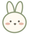

YOUR SOFT LITTLE CORNER
慢一点，小兔子在等你。
把忙碌留在门外。在这里，一点点陪伴就很好。
晴光小屋我们的第 1 天✧ 1 颗陪伴星星
浏览器暂时无法保存进度。你仍可以玩耍，但关闭页面后可能无法保留这次变化。
阳光正好米米的小房间
试着点点窗户，或摸摸小兔子。HOME, SWEET HOME
米米的小心事
你来啦。刚刚留了一小块阳光给你。
LITTLE THINGS, GROWING
小屋，也在一点点变成我们的家。
更多陪伴，会带来新的小惊喜。

little bunnyA LITTLE ROOM. A LITTLE LOVE.YOUR SOFT LITTLE CORNER
把忙碌留在门外。在这里，一点点陪伴就很好。
你来啦。刚刚留了一小块阳光给你。
LITTLE THINGS, GROWING
更多陪伴，会带来新的小惊喜。